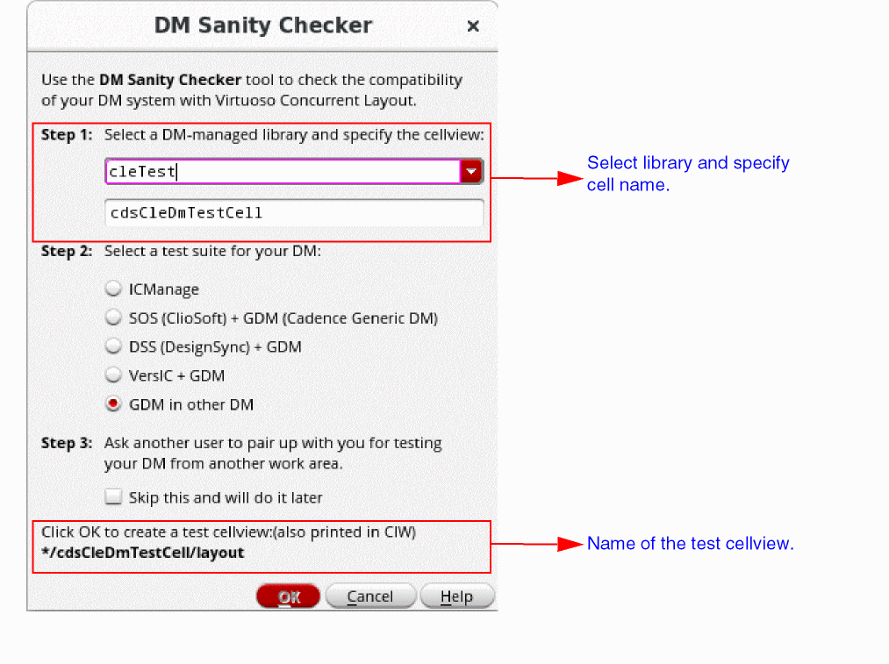

D
DM Sanity Checker
DM Sanity Checker lets you check the compatibility of your design management (DM) system with Virtuoso Concurrent Layout.
Each DM tool has its own use model that impacts how it interacts with different Cadence tools. There are a set of Cadence Generic DM (GDM) functions that make this interaction possible. Virtuoso Concurrent Layout depends on these functions to ensure consistent user experience across the board. DM Sanity Checker lets you check whether the GDM functions are interacting as expected with the current version of the DM tool.
DM Sanity Checker guides you through a series of tests by providing instructions on what to do in each test and how to verify the result.
When running the test answer Yes or No based on your observation in each test. Your response will help in assessing whether the current version of DM can be used with Virtuoso Concurrent Layout.
Setting Up The Test
-
In the Concurrent Layout Options form, click DM Sanity Checker in the Manager Only section.
The DM Sanity Checker form is displayed. - Select a library and specify a cell name for creating a test cellview in Step 1.
-
The test cellview being created is displayed at the bottom of the form.
 - Select a test suite for the DM tool in Step 2.
- Ask another user to pair up with you to test the DM tool from another work area, or select Skip this and will do it later if you do not want to run the test at this time in Step 3.
-
Disable automatic check-in:
a. In CIW, choose Options – Checkin Preferences.
b. Select never ask me and never auto checkin for the When auto checking in cellViews option. - Open Library Manager to observe the DM state changes of the test cellview.
- Click OK to create the test cellview and run the test.
Result of the test
After the tests are complete, a summary with results from all the tests is displayed. The result will indicate whether the functions of the selected test suite work well with the DM tool.
It is not required to pass all the tests. Some tests may be skipped based on your responses in the preceding steps.
At the end of the test, DM Sanity Checker will use your responses to compute how well the DM tool being tested will work with Virtuoso Concurrent Layout.
Related Topics
Concurrent Layout Options Form
Permission Required to Open a Design Partition View
Return to top